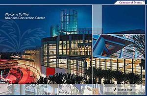

June 14 - June 15, 2010
2nd International Workshop on Bio-Design Automation
About IWBDA
The Second International Workshop on Bio-Design Automation (IWBDA) at DAC will bring together researchers from the synthetic biology, systems biology, and design automation communities. The focus is on concepts, methodologies and software tools for the computational analysis of biological systems and the synthesis of novel biological systems.
Still in its early stages, the field of synthetic biology has been driven by experimental expertise; much of its success has been attributable to the skill of the researchers in specific domains of biology. There has been a concerted effort to assemble repositories of standardized components. However, creating and integrating synthetic components remains an ad hoc process. The field has now reached a stage where it calls for computer-aided design tools. The electronic design automation (EDA) community has unique expertise to contribute to this endeavor. This workshop offers a forum for cross-disciplinary discussion, with the aim of seeding collaboration between the research communities.
Topics of interest include:
- Design methodologies for synthetic biology.
- Standardization of biological components.
- Automated assembly techniques.
- Computer-aided modeling and abstraction techniques.
- Engineering methods inspired by biology.
Dates and Venue
Dates: June 14 - 15, 2010. Venue: San Diego Convention Center, Anaheim, CA.
The workshop is part of the 47th ACM/EDAC/IEEE Design Automation Conference (DAC), the premier conference in the field of electronic design automation with over 10,000 attendees. This year DAC will be held June 13-18, 2010 at the Anaheim Convention Center, Anaheim, CA.
Sponsors
{kind=link}
Abstract Submission
The program committee invites the submission of extended abstracts for oral and poster presentations. Both complete work as well as early-stage ground-breaking work are encouraged. Abstracts:
- should be at least 500 words but not more than 1000 words;
- may contain up to two figures;
- should be submitted as a single PDF file, up to 2 pages in length including figures;
- must have 1 inch margins at least a 10pt font size.
In the abstract:
- indicate whether you would like your abstract considered for a poster presentation, an oral presentation, or both;
- include the full names, affiliations and contact information of all authors.
Abstracts should be submitted by April 5, 2010 through the EasyChair system. (Abstracts submitted after April 5 will still be considered, until the presentation schedule is finalized on April 26, but may not receive full consideration.)
Registration, Travel, and Hotel Information
Registration is through the DAC website. It is open now! See: DAC Registration.
Click on the "Online Registration" link on the left (other information can be found on that menu as well). Our workshop is considered a "Workshops/Colocated Event". The registration costs are $230 for IEEE/ACM members and $305 for non-members.
You must register for the workshop by May 17th to be eligible for the workshop dinner. This is included in the workshop price for those that register in time.
See travel and hotel information on the DAC website.
Student Support
If you are a student planning on attending the workshop this year, support funds may be available. Please send the following to finances@biodesignautomation.org by April 28th:
- Your name
- Affiliation
- Year in school (if appropriate)
- 50-100 word statement detailing why you seek support and how you plan to participate in the workshop (oral presentation, poster, etc).
Requests for support will be evaluated according to the following criteria (in order of importance):
- Quality of abstract/contribution submitted
- Year in school
- Expected travel expenses
Call for Abstracts
The call for abstracts are posted here in pdf and text. Feel free to distribute!
Proceedings
IWBDA'10 ProceedingsKey Dates
- Abstract submission deadline: 4/5/2010 (Abstracts submitted after April 5 will still be considered, until the presentation schedule is finalized, but might not receive full consideration.)
- Abstract acceptance notification: 4/30/2010 (UPDATED) (Acceptance notification might be given later for abstracts submitted after April 5.)
- Workshop: 6/14 & 6/15/2010
Call for participation published: January 24th, 2011
Abstract submission deadline: April 19, 2011
Abstract acceptance notification: May 1, 2011
Workshop: June 6 & 7, 2011
Proceedings & Journal Publications
- Abstracts selected for inclusion in the program will be distributed to participants and posted here. See the proceedings from IWBDA '09.
- Through a partnership with the Public Library of Science (PLoS), selected papers based on accepted abstracts will be published as a special collection of the interdisciplinary open access journal PLoS ONE. Authors of selected abstracts will be invited to submit a complete manuscript for publication in PLoS ONE. Submitted manuscripts will be reviewed according to PLoS ONE standard editorial policies.
Organizing Committee
- General Chair - Marc Riedel (University of Minnesota)
- General Secretary - Douglas Densmore (Boston University)
- Program Committee Chair - Ron Weiss (MIT)
- Publication Chair - Jean Peccoud (Virginia Tech)
- Industry Liaison Chair - Andreas Kuehlmann (Cadence Research Labs)
- Finance Chair - David Thorsley (University of Washington)
- DAC Liaison & Publicity Chair - Soha Hassoun (Tufts University)
- J. Christopher Anderson, UC Berkeley
- Adam Arkin, UC Berkeley
- Jacob Beal, BBN Technologies
- Kevin Clancy, Life Technologies
- Domitilla Del Vecchio, University of Michigan
- Douglas Densmore, Joint BioEnergy Institute
- Hanna El-Samad, UCSF
- Drew Endy, Stanford University
- Soha Hassoun, Tufts University
- Alfonso Jaramillo, Ecole Polytechnique
- Yannis Kaznessis, University of Minnesota
- Eric Klavins, University of Washington
- Heinz Koeppl, EPFL
- Tanja Kortemme, UCSF
- Andreas Kuehlmann, Cadence Research Labs
- Vishwesh Kulkarni, IIT Bombay
- Natasa Miskov-Zivanov, Univ. of Pittsburgh
- Chris Myers, University of Utah
- Jean Peccoud, Virginia Tech
- Andrew Phillips, Microsoft Research
- Marc Riedel, University of Minnesota
- Howard Salis, Penn State University
- Herbert Sauro, University of Washington
- David Thorsley, University of Washington
- Christopher Voigt, UCSF
- Ron Weiss, MIT
- Erik Winfree, Caltech
- Chris Winstead, Utah State University
Executive Committee
Program Committee
Agenda
Monday – June 14th- 9am - 10am, Rm. 303CD
- Opening Remarks: Marc Riedel (General Chair), Ron Weiss (Program Chair). Slides.
- Keynote Address: Roger Brent, Fred Hutchinson Cancer Research Center. Slides.
- 10:30 - Noon - Rm. 303CD
- Tutorial #1 on DNA Nanostructures, Shawn Douglas, Harvard.
- Tutorial #2 on CAD for Genetic Circuits, Jean Peccoud, Virginia Tech. Slides.
- Noon - 2pm, Rm. 304A
- Lunch (Rm. 304A) and Posters Session 1 (outside of Rm. 303CD)
- 2:00pm - 4:00pm, Rm. 303CD
- Tech. Talks Session 1 - Tools for Bio-Design Automation
- 1BDA.1 SynBioSS Designer: From DNA Sequences to Dynamic Phenotypes and Back
- Emma Weeding and Yiannis Kaznessis
- 1BDA.2 TinkerCell: CAD Application with Support for Third-party Programs
- Deepak Chandran and Herbert Sauro
- 1BDA.3 Automatic Compilation from High-Level Languages to Genetic Regulatory Networks
- Jacob Beal, Ting Lu and Ron Weiss
- 1BDA.4 Designing Biological Devices in GEC
- James Brown, Neil Dalchau, Michael Pedersen and Andrew Phillips
- 1BDA.1 SynBioSS Designer: From DNA Sequences to Dynamic Phenotypes and Back
- Tech. Talks Session 1 - Tools for Bio-Design Automation
- 4:30pm - 6:00pm, Rm. 303CD
- Tech. Talks Session 2 - Modeling and Standards for Bio-Design
- 2BDA.1 A Semantic Knowledge Base of Standard Biological Parts
- Michal Galdzicki, Cesar Rodriguez, Deepak Chandran, John Gennari and Herbert Sauro
- 2BDA.2 Modeling and Predicting the Strength of Bacterial Promoters: A Test-case with Promoters Regulated by Escherichia coli Sigma E
- Virgil Rhodius, Vivek Mutalik and Carol Gross
- 2BDA.3 Resolving Variable Dependencies in the MPDE-SSA Algorithm
- Abiezer Tejeda, Chris Winstead, Eduardo Monzon, Chris Myers and Curtis Madsen
- 2BDA.1 A Semantic Knowledge Base of Standard Biological Parts
- Tech. Talks Session 2 - Modeling and Standards for Bio-Design
- 7:00pm - 10:00pm
- Dinner - Sponsored by ArtistDesign and COMBEST
- Naples Ristorante e Pizzeria
- Downtown Disney, 1550 S Disneyland Dr, Anaheim, CA 92802
- Restaurant Telephone: (714) 776-6200
- Dinner - Sponsored by ArtistDesign and COMBEST
- 8:30am - 10:15am, Ballroom ABC
- General DAC Keynote (full conference)
- 10:30am - Noon, Rm. 303CD
- Open Poster Session (full conference)
- Tech. Talks Session 3 - Design of Biological Circuits and Networks
- Noon - 2pm, Rm. 203A
- Lunch (Rm. 203A or Terrance) and Posters Session 2 (Outside of Rm. 303CD)
- 2:00pm - 3:00pm, Rm. 303CD
- Tech. Talks Session 4 - Biological Pathway and Network Optimization
- 4BDA.1s Predictably Profitable Paths in Metabolic Networks
- Ehsan Ullah, Mark Walker, Kyongbum Lee and Soha Hassoun Slides.
- 4BDA.2s Robust Inference of Biological Bayesian Networks
- Masoud Rostami and Kartik Mohanram Slides.
- 4BDA.3s Pathway Identification for Strain Engineering
- Mona Yousofshahi, Kyongbum Lee and Soha Hassoun Slides.
- Panel Session - Sponsored by ArtistDesign and COMBEST
- Ron Weiss (MIT) - Moderator
- J.Christopher Anderson (UC Berkeley)
- Andreas Kuehlmann (Cadence Research Labs)
- Andrew Phillips (Microsoft Research)
- Closing Remarks, Doug Densmore (General Secretary)
- Joint IWBDA/DAC Session, Invited Talks
- Pamela Silver, Harvard University
- J. Chris Anderson, Berkeley
- Richard Murray, Caltech
- Post-workshop / Future-workshop planning (executive committee & open to all)
Posters
- Intracellular Disease Prevention and Tuneable Device Behaviour in Bacteria
- Sangram Bagh, Mahuya Mandal, Jordan Ang and David McMillen
- Modeling Swarms of Micro-robots for Biological Applications
- Paul Bogdan and Radu Marculescu
- A Genetic Programming Framework for the Simulation and Design of Self-assembling, Chemotaxis-driven Cell Aggregates. Poster
- David Breen and Linge Bai
- Data Model Approaches for Design, Assembly and Validation in Synthetic Biology
- Kevin Clancy
- Scalable open source software framework for laboratory automation and laboratory devices
- Jonathan Cline
- Towards Integrative CellML Modeling Technologies for Intracellular Research
- Mike Cooling, Ely Matos, Candice Zhou, Gary Tao and Poul Nielsen
- Towards Distributed Web of Registries: Design, Implementation and Practice of the JBEI Registry
- Timothy Ham, Zinovii Dmytriv, Nathan Hillson and Jay Keasling
- Towards Automated-assembly of Biological Parts
- Nathan Hillson, John Thorne, Doug Densmore, Masood Hadi and Jay Keasling
- Digital Signal Processing with Biomolecular Reactions
- Hua Jiang, Marc Riedel and Keshab Parhi
- Bio-Specific HW/SW Co-Design for Multicore Systems on Chip
- Iyad Al Khatib
- Markov Chain Analysis of Genetic Circuits
- Curtis Madsen, Chris Myers and Chris Winstead
- Logical Modeling of Peripheral T Cell Differentiation Poster
- Natasa Miskov-Zivanov, John Sekar, Michael Turner, Lawrence Kane, Penelope Morel and James Faeder
- Synthetic gene circuits with a cell-free toolbox
- Vincent Noireaux and Jonghyeon Shin
- Structure-based Prediction of Residue Coevolution in Proteins
- Noah Ollikainen, Ellen Sentovich, Carlos Coelho, Andreas Kuehlmann and Tanja Kortemme
- Architecture for Synthetic Organism Design
- Matthew Peterson, Steven Fairchild and John Dileo
- Sequence Refiner: Automated conversion of natural genetic sequences into standard biological parts
- Cesar Rodriguez, Adam Arkin and Drew Endy
- Using uncertainty quantification to constrain dynamic neuron modeling parameters
- Richard Schiek and Christy Warrender
- Identification of Illegal States in a Discrete Transition Model of Apoptosis Signaling
- Anupam Shrivastava, Michael Hsiao, Huy Lam, David Samuels and Carla Finkielstein
Survey
Please fill out the following survey at the completion of the workshop - Survery
Mailing List
To add yourself to the IWBDA mailing list, please send an email to listserv@lists.umn.edu with a blank subject line, consisting of a single line of text: SUBSCRIBE IWBDA-list Joe Nobody (where Joe Nobody is your name).
This is a moderated list: only postings approved by the owners will be distributed. Only material directly related to IWBDA will be sent.
Contact
- General Information: info@biodesignautomation.org
- Program: program@biodesignautomation.org
- Publication: publication@biodesignautomation.org
- Industry Liaison: industry@biodesignautomation.org
- Finances: finances@biodesignautomation.org
Related Meetings
- International Symposium on Nanoscale Architectures (NANOARCH 2010)
- International Workshop on Logic and Synthesis (IWLS 2010)
Past Years
- 1st International Workshop on Bio-Design Automation (IWBDA 2009): Moscone Center, San Francisco, CA, July 27, 2009
Miscellaneous
- Iowa Wholesale Beer Distributors Association (the other IWBDA!)